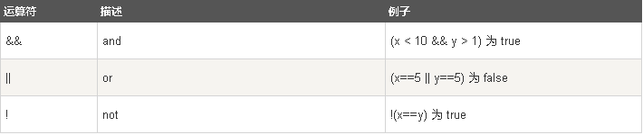

比较和逻辑运算符用于测试 true 或者 false。
比较运算符在逻辑语句中使用，以测定变量或值是否相等。 x=5，下面的表格解释了比较运算符：
可以在条件语句中使用比较运算符对值进行比较，然后根据结果来采取行动： if (age<18) x="Too young";
逻辑运算符用于测定变量或值之间的逻辑。 给定 x=6 以及 y=3，下表解释了逻辑运算符：
JavaScript 还包含了基于某些条件对变量进行赋值的条件运算符。 语法 variablename=(condition)?value1:value2 例子 实例 如果变量 age 中的值小于 18，则向变量 voteable 赋值 "年龄太小"，否则赋值 "年龄已达到"。 voteable=(age<18)?"年龄太小":"年龄已达到";